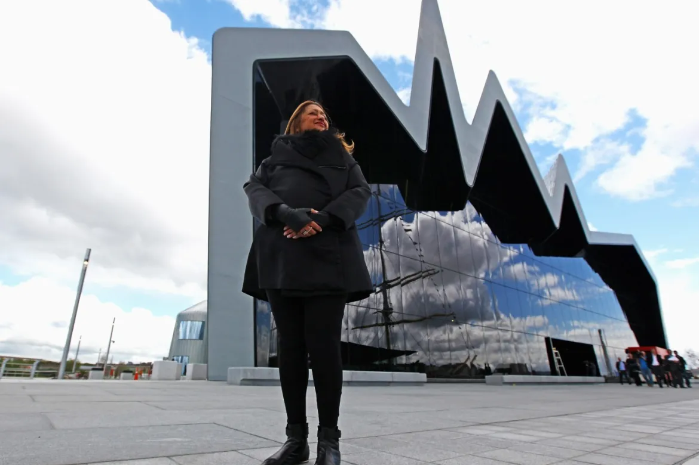
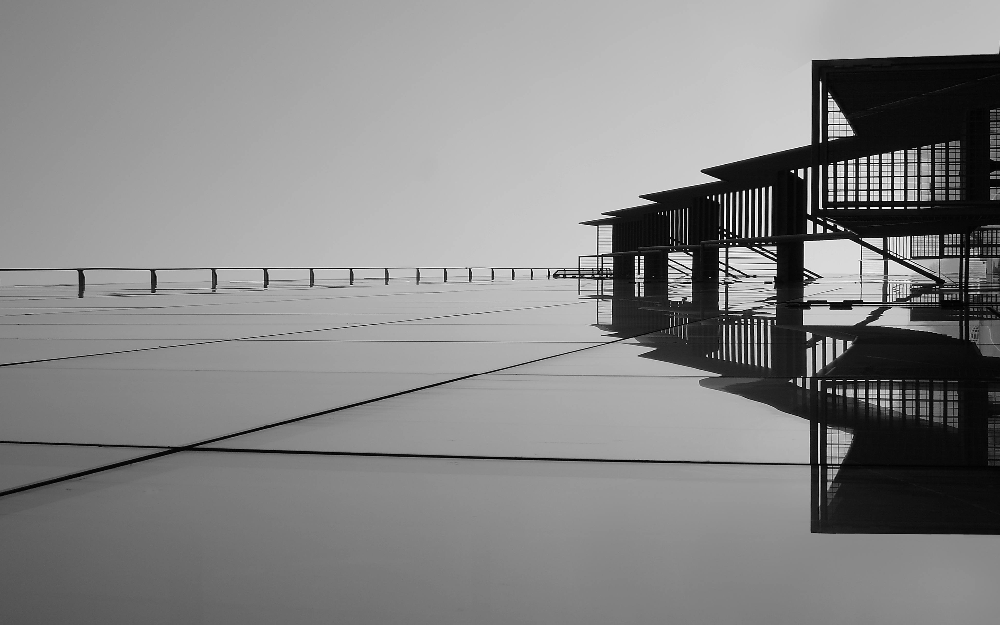

Architecture

The Architecture Department is a field of study that focuses on the design, planning, and construction of buildings and urban spaces. It combines art, science, and technology to create functional, aesthetic, and sustainable environments that serve human needs.
Architectural Design: Residential, commercial, cultural, and religious buildings.

Skills Gained Creative thinking and problem-solving. Technical drawing and digital modeling. Site and building analysis. Project management and coordination. Environmental awareness and sustainable design.
Career Opportunities Architect Interior Designer Urban Planner 3D Visualization & Rendering Specialist Construction & Project Manager Academic or Researcher